Building, Training, and Deploying an Exam Score Prediction Model with scikit-learn and Flask
This guide walks through the complete machine learning pipeline for the Smart Forecast project: predicting student exam scores from features like hours studied, sleep hours, attendance percentage, and previous scores. The pipeline covers data loading, preprocessing, EDA, training three regression models (Linear Regression, Random Forest, and Support Vector Regression), comparing them, and deploying the best model as a Flask web application where users can input their study habits and receive a predicted exam score.
The project is structured into modular Python scripts under src/ for the ML pipeline and frontend/ for the web interface.
git clone <repository-url>
cd CMPT310SmartForecastpython -m venv myenv
source myenv/bin/activate # On Windows: myenv\Scripts\activatepip install -r requirements.txtThe key packages installed include:
scikit-learn==1.8.0 — ML models, preprocessing, metrics, GridSearchCVpandas==3.0.1 — Data loading and manipulationmatplotlib==3.10.8 and seaborn==0.13.2 — Visualizationsnumpy==2.4.2 — Numerical operationsjoblib==1.5.3 — Model serialization
The dataset is stored in data/exams.csv and contains 200 student records with the following columns:
| Column | Type | Description |
|---|---|---|
student_id | String | Unique identifier (e.g., S001) |
hours_studied | Float | Hours spent studying for the exam |
sleep_hours | Float | Average nightly sleep hours |
attendance_percent | Float | Class attendance percentage |
previous_scores | Int | Average of prior test/exam scores |
exam_score | Float | Target variable — the final exam score |
Sample rows from the dataset:
student_id,hours_studied,sleep_hours,attendance_percent,previous_scores,exam_score
S001,8.0,8.8,72.1,45,30.2
S002,1.3,8.6,60.7,55,25.0
S003,4.0,8.2,73.7,86,35.8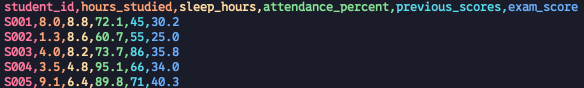
The preprocessing module (src/data_preprocessing.py) handles two tasks: loading the CSV and splitting the data into training and test sets.
import pandas as pd
def load_data(path):
df = pd.read_csv(path)
return dffrom sklearn.model_selection import train_test_split
def split_data(df):
X = df.drop(columns=["student_id", "exam_score"])
y = df["exam_score"]
return train_test_split(
X, y,
test_size=0.2,
random_state=42
)Key decisions:
student_id is dropped because it is a non-predictive identifier.exam_score is the target variable (y).hours_studied, sleep_hours, attendance_percent, previous_scores) form the feature matrix (X).random_state=42 for reproducibility.
Before training any models, we visualize the data to understand distributions, correlations, and relationships between features and the target. The EDA module (src/eda.py) produces four types of plots.
def plot_score_distribution(df):
plt.hist(df["exam_score"], bins=20)
plt.title("Distribution of Exam Scores")
plt.xlabel("Exam Score")
plt.ylabel("Count")
plt.show()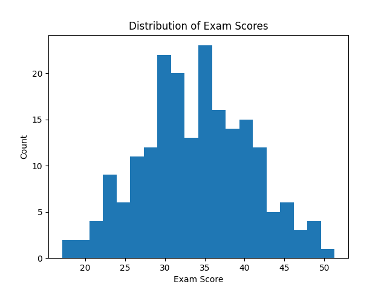
def plot_correlations(df):
corr = df.drop(columns=["student_id"]).corr()
sns.heatmap(corr, annot=True, cmap="coolwarm")
plt.title("Correlation Matrix")
plt.show()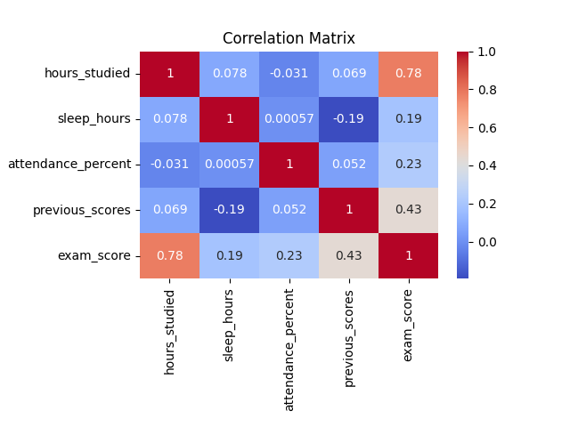
def scatter_relationships(df):
features = ["hours_studied", "sleep_hours",
"attendance_percent", "previous_scores"]
for feature in features:
plt.scatter(df[feature], df["exam_score"])
plt.xlabel(feature)
plt.ylabel("exam_score")
plt.title(f"{feature} vs Exam Score")
plt.show()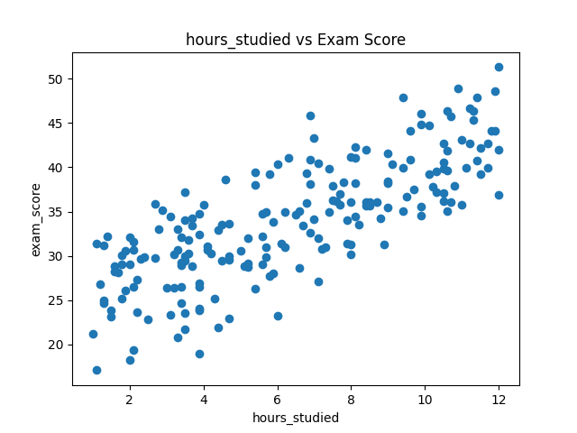
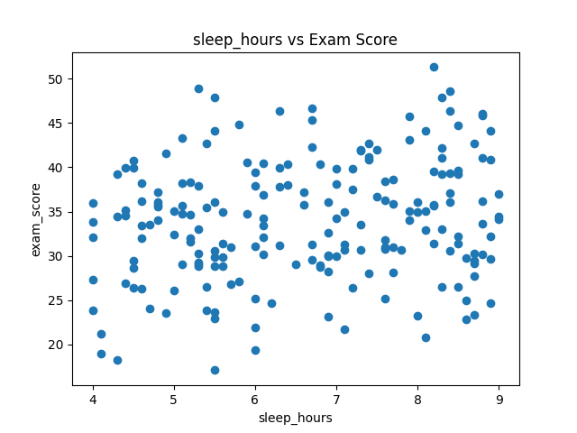
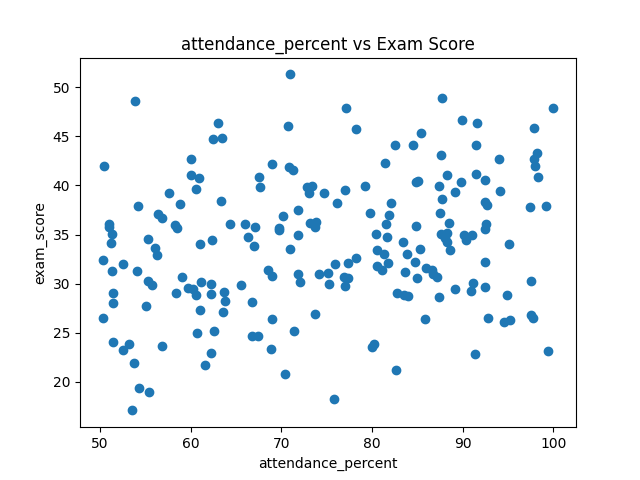
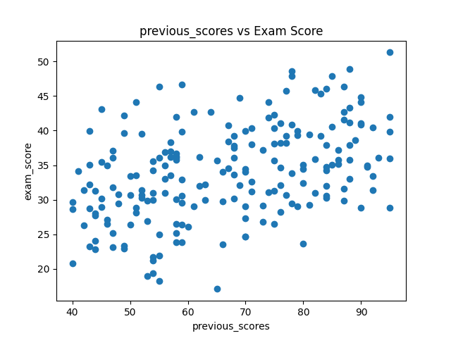
These plots reveal which features have the strongest linear relationship with the exam score. For instance, hours_studied typically shows a positive trend, while sleep_hours may show a weaker or non-linear relationship.
We start with a simple Linear Regression model as our baseline. This gives us a reference point to compare more complex models against.
from sklearn.linear_model import LinearRegression
from sklearn.metrics import mean_squared_error, r2_score
import numpy as np
def train_baseline(X_train, X_test, y_train, y_test):
model = LinearRegression()
model.fit(X_train, y_train)
y_pred = model.predict(X_test)
mse = mean_squared_error(y_test, y_pred)
rmse = np.sqrt(mse)
r2 = r2_score(y_test, y_pred)
print("\nLinear Regression Results:")
print("MSE:", mse)
print("RMSE:", rmse)
print("R²:", r2)
return {"model": "Linear Regression", "mse": mse, "rmse": rmse, "r2": r2}Metrics explained:
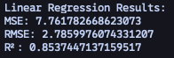
We experiment with two more powerful models: Random Forest Regressor and Support Vector Regression (SVR). Both are tuned using GridSearchCV with 5-fold cross-validation.
from sklearn.ensemble import RandomForestRegressor
from sklearn.model_selection import GridSearchCV
def random_forest_model(X_train, X_test, y_train, y_test):
param_grid = {
"n_estimators": [50, 100],
"max_depth": [None, 5, 10],
"min_samples_split": [2, 5]
}
rf = RandomForestRegressor(random_state=42)
grid = GridSearchCV(rf, param_grid, cv=5, scoring="r2", n_jobs=-1)
grid.fit(X_train, y_train)
best_model = grid.best_estimator_
print("\nBest Random Forest Params:", grid.best_params_)
return evaluate_model("Random Forest", best_model, X_test, y_test)Grid search parameters:
n_estimators: Number of trees (50 or 100)max_depth: Maximum tree depth (unlimited, 5, or 10)min_samples_split: Minimum samples to split a node (2 or 5)This creates 3 × 3 × 2 = 18 parameter combinations, each evaluated with 5-fold CV, for a total of 90 model fits.
from sklearn.svm import SVR
from sklearn.preprocessing import StandardScaler
from sklearn.pipeline import Pipeline
def svr_model(X_train, X_test, y_train, y_test):
pipeline = Pipeline([
("scaler", StandardScaler()),
("svr", SVR())
])
param_grid = {
"svr__C": [0.1, 1, 10],
"svr__epsilon": [0.1, 0.5, 1],
"svr__kernel": ["linear", "rbf"]
}
grid = GridSearchCV(pipeline, param_grid, cv=5, scoring="r2", n_jobs=-1)
grid.fit(X_train, y_train)
best_model = grid.best_estimator_
print("\nBest SVR Params:", grid.best_params_)
return evaluate_model("SVR", best_model, X_test, y_test)Why a Pipeline? SVR is sensitive to feature scaling. The StandardScaler is included in the pipeline so that scaling is applied correctly within each cross-validation fold, preventing data leakage.
Grid search parameters:
C: Regularization strength (0.1, 1, 10)epsilon: Epsilon in the epsilon-SVR model (0.1, 0.5, 1)kernel: Kernel type (linear or RBF)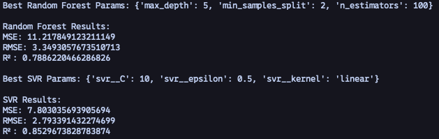
After training all three models, we compile their results into a comparison table and select the model with the highest R² score.
results = []
results.append(train_baseline(X_train, X_test, y_train, y_test))
results.append(random_forest_model(X_train, X_test, y_train, y_test))
results.append(svr_model(X_train, X_test, y_train, y_test))
print("\n=== Model Comparison Table ===")
df_results = pd.DataFrame(results)
print(df_results)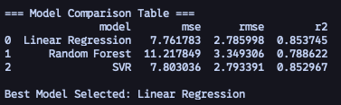
def select_best_model(results):
best = max(results, key=lambda x: x["r2"])
print("\nBest Model Selected:", best["model"])
return best["model"]The best model is then retrained on the full training set (without the grid search overhead) using the optimal hyperparameters discovered during grid search.
def retrain_best(model_name, X_train, y_train):
if model_name == "Linear Regression":
model = LinearRegression()
elif model_name == "Random Forest":
model = RandomForestRegressor(n_estimators=100, random_state=42)
elif model_name == "SVR":
model = Pipeline([
("scaler", StandardScaler()),
("svr", SVR(C=1, epsilon=0.1, kernel="rbf"))
])
model.fit(X_train, y_train)
return modelThe selected best model is evaluated on the held-out test set, and two diagnostic plots are generated.
def final_evaluation(model, X_test, y_test):
y_pred = model.predict(X_test)
mse = mean_squared_error(y_test, y_pred)
rmse = np.sqrt(mse)
r2 = r2_score(y_test, y_pred)
print("\n=== Final Model Performance ===")
print("MSE:", mse)
print("RMSE:", rmse)
print("R²:", r2)
return y_pred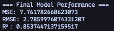
def plot_predictions(y_test, y_pred):
plt.scatter(y_test, y_pred)
plt.xlabel("Actual Scores")
plt.ylabel("Predicted Scores")
plt.title("Actual vs Predicted Scores")
min_val = min(y_test.min(), y_pred.min())
max_val = max(y_test.max(), y_pred.max())
plt.plot([min_val, max_val], [min_val, max_val]) # ideal line
plt.show()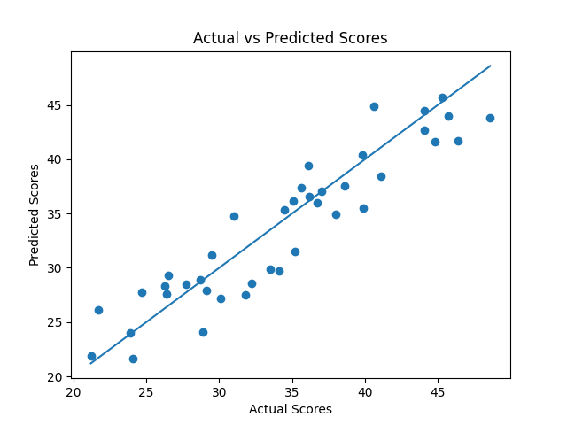
def plot_residuals(y_test, y_pred):
residuals = y_test - y_pred
plt.hist(residuals, bins=20)
plt.title("Residual Distribution")
plt.xlabel("Error")
plt.ylabel("Frequency")
plt.show()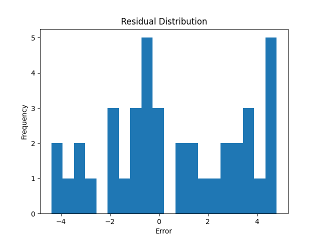
The final step is deploying the trained model as an interactive web application using Flask. Users can input their study parameters and receive a predicted exam score in real time.
cd frontend
pip install -r requirements.txt
cd ..python frontend/train_model.pyThis script (frontend/train_model.py) trains a Linear Regression model with StandardScaler preprocessing and saves both the model and scaler to frontend/models/:
import joblib
from sklearn.preprocessing import StandardScaler
from sklearn.linear_model import LinearRegression
import pandas as pd
df = pd.read_csv('../data/exams.csv')
X = df.drop(columns=["student_id", "exam_score"])
y = df["exam_score"]
scaler = StandardScaler()
X_scaled = scaler.fit_transform(X)
model = LinearRegression()
model.fit(X_scaled, y)
joblib.dump(model, 'models/best_model.pkl')
joblib.dump(scaler, 'models/scaler.pkl')python frontend/app.pyThe Flask app (frontend/app.py) exposes two endpoints:
GET / — Renders the prediction form (HTML template)POST /predict — Accepts JSON with features, applies the saved scaler, runs the model, and returns the predicted score@app.route('/predict', methods=['POST'])
def predict():
data = request.get_json()
features = {
'hours_studied': float(data['hours_studied']),
'sleep_hours': float(data['sleep_hours']),
'attendance_percent': float(data['attendance_percent']),
'previous_scores': float(data['previous_scores'])
}
df_input = pd.DataFrame([features])
scaler = load_scaler()
scaled_features = scaler.transform(df_input)
model = load_model()
prediction = model.predict(scaled_features)[0]
prediction = np.clip(prediction, 0, 100) # Clamp to valid range
return jsonify({'prediction': round(float(prediction), 2), 'success': True})After starting the server, open http://localhost:8000 in your browser to access the prediction interface.
Error: Model not found at models/best_model.pklCause: The model has not been trained and saved yet, or the models/ directory does not exist.
Fix:
# Make sure the models directory exists
mkdir -p frontend/models
# Train and save the model
python frontend/train_model.pyCause: The order of features in the input DataFrame must match the order used during training. The scaler expects features in the exact same column order.
Fix: Ensure the feature dictionary in the Flask /predict endpoint matches the training order:
FEATURE_COLS = ['hours_studied', 'sleep_hours', 'attendance_percent', 'previous_scores']
features = {
'hours_studied': float(data['hours_studied']),
'sleep_hours': float(data['sleep_hours']),
'attendance_percent': float(data['attendance_percent']),
'previous_scores': float(data['previous_scores'])
}n_jobs=-1 flag uses all available CPU cores to speed things up.
ModuleNotFoundError: No module named 'sklearn' or similar.
Cause: The virtual environment is not activated or dependencies are not installed.
Fix:
# Activate the virtual environment
source myenv/bin/activate
# Reinstall dependencies
pip install -r requirements.txtCopyright © 2026 — CMPT 310 Smart Forecast Team
We grant the instructor and Simon Fraser University (SFU) permission to post this guide online and share it with future CMPT 310 students for academic and educational purposes. We retain full copyright of this work.